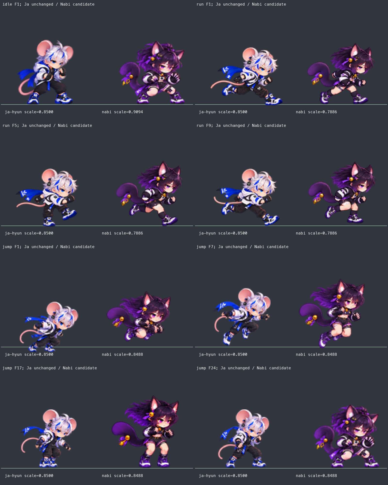

자현 목도리 3종 + 나비 체형 18종. 자현은 착용 목도리의 연결·움직임을 부드럽게 조정했습니다. 나비는 16종의 그림을 보존해 표시 크기를 줄였고, 달리기와 점프만 새로 그려 연결했습니다.
검토용 후보입니다. 나비 새 그림과 배율은 게임에 아직 등록하지 않았습니다. 아래 영상은 PC의 실제 게임 코드로 촬영했으며, Android 최종 확인 결과는 아닙니다. 피격 문제는 기존 Android 영상에 대한 사용자 해결 확인으로 종료했습니다.

귀·머리카락·꼬리의 바깥 상자 높이를 해부학 등신으로 계산하지 않았습니다. 비교판과 영상은 최종 후보의 그림과 표시 배율을 사용합니다.
18종 전체 프레임·표시 순서 검토 페이지 · 후보 데이터
| 모션 | 그림 수 | 변경 |
|---|---|---|
| 나비 / attack_air_heavy | 16장 | 기존 PNG 유지 · 표시 배율 0.92배 |
| 나비 / attack_air_light | 16장 | 기존 PNG 유지 · 표시 배율 0.92배 |
| 나비 / attack_heavy_up | 16장 | 기존 PNG 유지 · 표시 배율 0.92배 |
| 나비 / attack_light_combo_01 | 16장 | 기존 PNG 유지 · 표시 배율 0.92배 |
| 나비 / attack_light_combo_02 | 16장 | 기존 PNG 유지 · 표시 배율 0.92배 |
| 나비 / attack_light_up | 16장 | 기존 PNG 유지 · 표시 배율 0.92배 |
| 나비 / death | 16장 | 기존 PNG 유지 · 표시 배율 0.92배 |
| 나비 / guard | 16장 | 기존 PNG 유지 · 표시 배율 0.92배 |
| 나비 / hitstun | 16장 | 기존 PNG 유지 · 표시 배율 0.92배 |
| 나비 / idle | 16장 | 기존 PNG 유지 · 표시 배율 0.92배 |
| 나비 / jump | 24장 | 새 전신 원화·연결 보정 |
| 나비 / knock_down | 16장 | 기존 PNG 유지 · 표시 배율 0.92배 |
| 나비 / launch | 16장 | 기존 PNG 유지 · 표시 배율 0.92배 |
| 나비 / ring_out | 16장 | 기존 PNG 유지 · 표시 배율 0.92배 |
| 나비 / run | 16장 | 새 전신 원화·연결 보정 |
| 나비 / spawn | 16장 | 기존 PNG 유지 · 표시 배율 0.92배 |
| 나비 / special_side | 32장 | 기존 PNG 유지 · 표시 배율 0.92배 |
| 나비 / wake_up | 16장 | 기존 PNG 유지 · 표시 배율 0.92배 |
위 21종 수정본의 명시 승인 후 등록·최종 검사·PR 병합을 진행합니다.